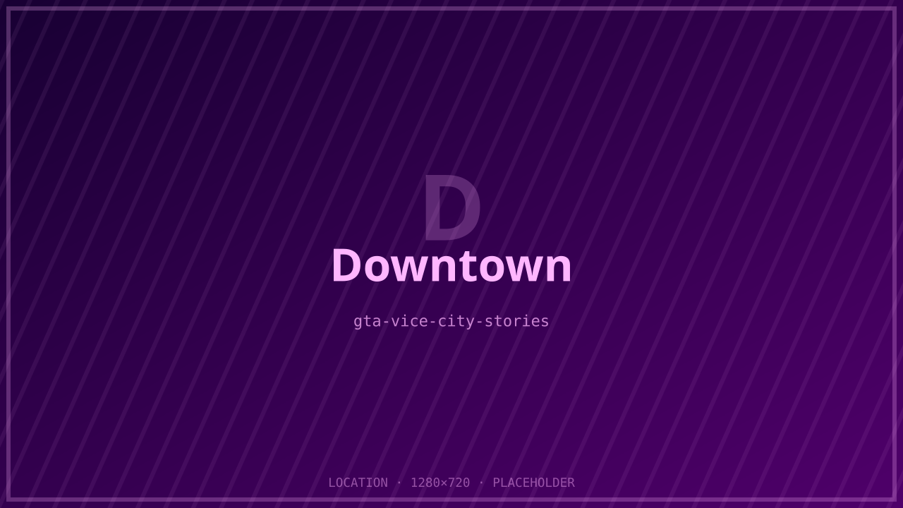

VCS · 10 records · coverage: partial
Locations — Grand Theft Auto: Vice City Stories
Cities, districts and landmarks, with parent areas.
Download locations.json Whole game bundle
| Image | Location | Type | Parent area |
|---|---|---|---|
 | Downtown | Neighbourhood | Vice Mainland |
 | Escobar International Airport | Landmark | Vice Mainland |
 | Fort Baxter | Landmark | Vice Mainland |
 | Little Haiti | Neighbourhood | Vice Mainland |
 | Little Havana | Neighbourhood | Vice Mainland |
 | Starfish Island | Island | Vice City |
 | Trailer Park | District | Vice Mainland |
 | Vice Beach | Island | Vice City |
 | Vice City | City | — |
 | Vice City Mainland | Island | Vice City |
Field definitions
| Field | Type | Required | Notes |
|---|---|---|---|
name | string | yes | |
type | string | yes | one of: City, Borough, District, Neighbourhood, Town, Landmark, Interior, Island, Region, State |
parent | string | null | no | |
summary | string | no | |
image | string | null | no | |
verified | boolean | yes | |
source | string | no |